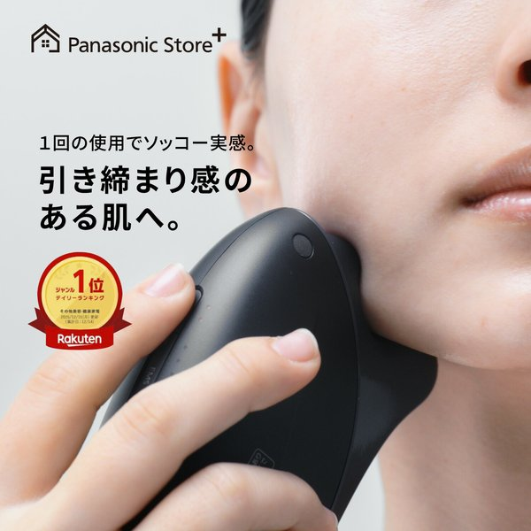
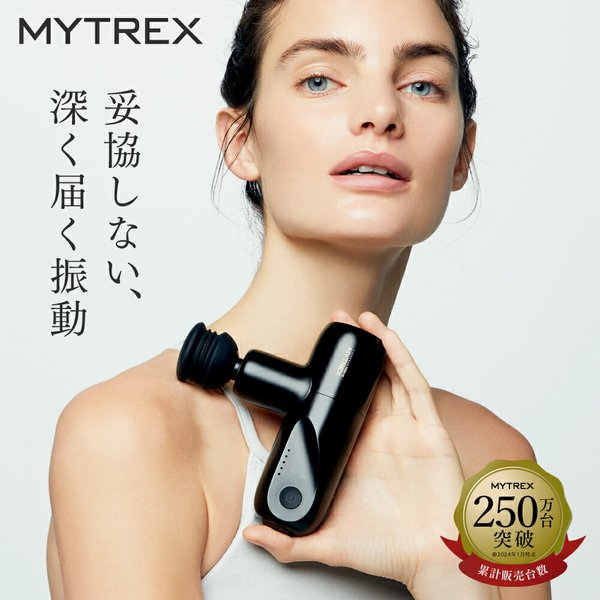
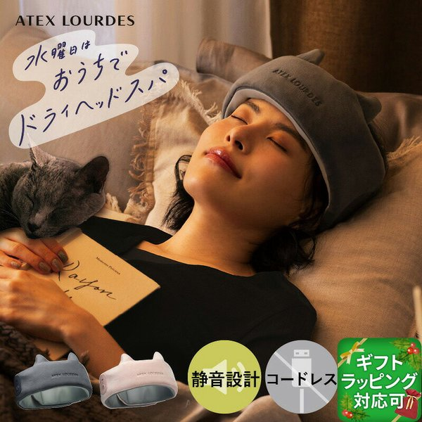
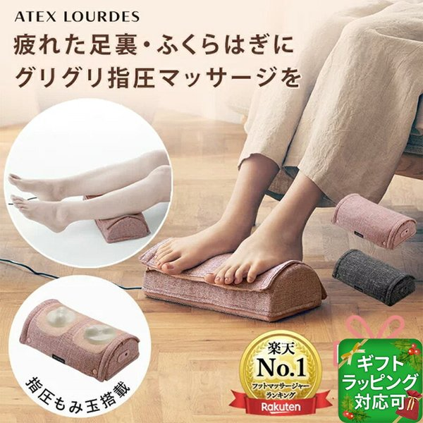
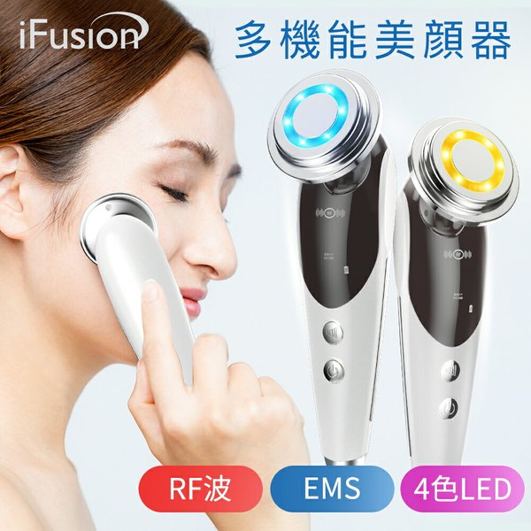
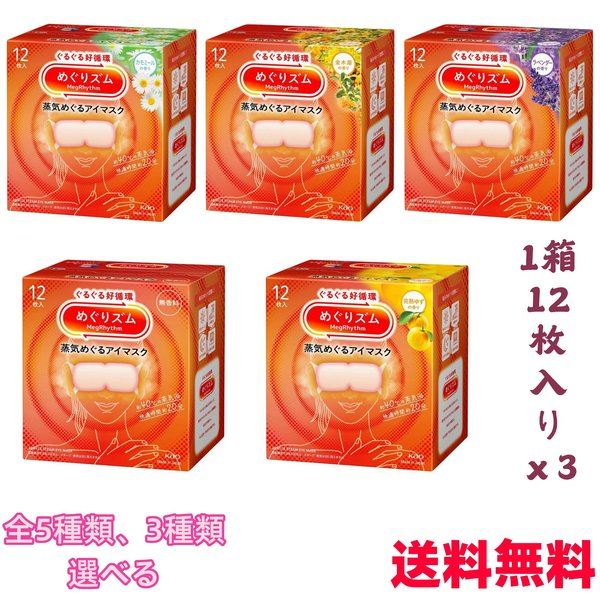
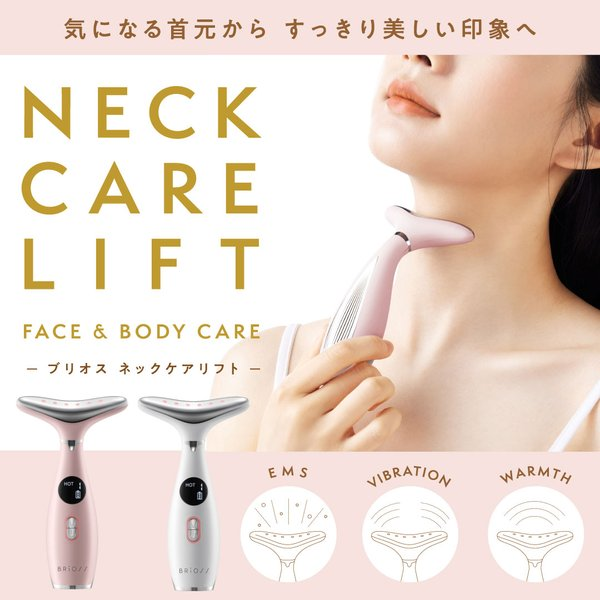
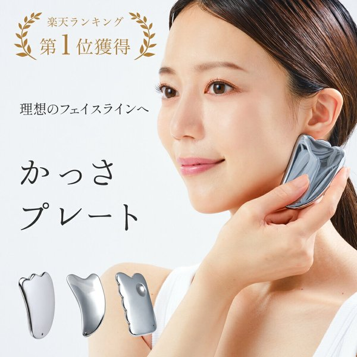
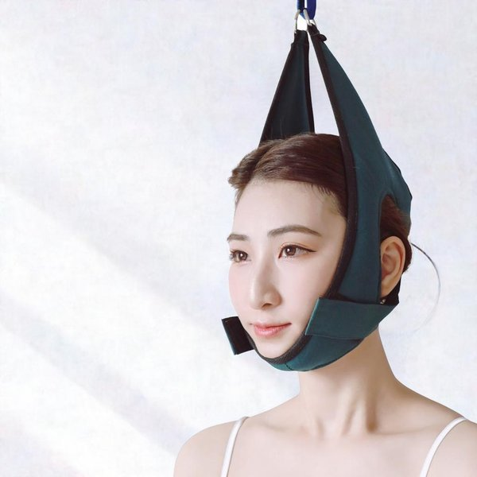

【2026年最新】自宅で本格エステ＆整体気分！高評価EMS美顔器・ヘッドスパ＆目元・首ケア家電おすすめ10選
エステや整体に通う時間が取れないまま、気づけば数ヶ月。そんなときに効くのが、家で数分だけ使えるケア家電です。毎日続けられるかどうかは、道具の手軽さでほぼ決まります。
選ぶ軸は、ケアしたい場所と、使う場所です。顔のリフトアップならEMSの美顔器、頭皮と首のこりならヘッドスパやネックケア、脚のむくみならフットマッサージャー。お風呂で使いたいなら防水仕様か、水を使わないドライ式かを確認します。そして価格。1万円以下で試してから、続けられるものだけ上位機種に替える順番が、後悔しにくい買い方です。
本記事では、楽天市場で人気・高評価の自宅エステ・ケア家電10選を、実売価格とレビュー評価つきで写真付き紹介します。
- おすすめ10選 スペック・特徴比較表
- BEST 1｜ミーゼ スカルプリフト アクティブ プラス（MS82G）
- BEST 2｜リフトケア美顔器 バイタリフトかっさ EH-SP86
- BEST 3｜REBIVE MINI マッサージガン（ハンディ）
- BEST 4｜ルルド ドライヘッドスパ マドロムーン（AX-HX345）
- BEST 5｜ルルド フットマッサージャー ミニ（AX-HP324）
- BEST 6｜EMS＆光エステ 多機能美顔器（ラジオ波・超音波・イオン導入）
- BEST 7｜蒸気でホットアイマスク 12枚入×3箱（香り選択）
- BEST 8｜ネックケアリフト（温感EMS・LED・振動）
- BEST 9｜かっさプレート テラヘルツ（突起付き・温熱対応）
- BEST 10｜おうちでのび～る 首ベルト（ネックストレッチャー）
- 【読者負担0円】買わなくても得する無料サービス
- まとめ：自宅エステ・ケア家電10選の選び方
| 順位 | 商品名 | ブランド | 最大の特徴・おすすめ理由 | 総合評価 |
|---|---|---|---|---|
| BEST 1 | ミーゼ スカルプリフト アクティブ プラス（MS82G） | YA-MAN（ヤーマン） | 頭皮と顔を1台でケアできる | 4.42 |
| BEST 2 | リフトケア美顔器 バイタリフトかっさ EH-SP86 | Panasonic（パナソニック） | EMSで表情筋にアプローチ | 4.59 |
| BEST 3 | REBIVE MINI マッサージガン（ハンディ） | MYTREX | 小型で自分の肩にも届く | 4.67 |
| BEST 4 | ルルド ドライヘッドスパ マドロムーン（AX-HX345） | ATEX（アテックス） | 水を使わないドライ式で手軽 | 4.49 |
| BEST 5 | ルルド フットマッサージャー ミニ（AX-HP324） | ATEX（アテックス） | 小型で置き場所を取らない | 4.65 |
| BEST 6 | EMS＆光エステ 多機能美顔器（ラジオ波・超音波・イオン導入） | iFusion | 1台で複数のケアをこなせる | 4.34 |
| BEST 7 | 蒸気でホットアイマスク 12枚入×3箱（香り選択） | めぐりズム（花王） | 開けてすぐ温かくなる手軽さ | 4.95 |
| BEST 8 | ネックケアリフト（温感EMS・LED・振動） | BRIOS（ブリオス） | 首・フェイスラインに当てるだけ | 4.14 |
| BEST 9 | かっさプレート テラヘルツ（突起付き・温熱対応） | MORE VALUE | 1,780円で試しやすい価格 | 4.62 |
| BEST 10 | おうちでのび～る 首ベルト（ネックストレッチャー） | auc-wakasugi | 家庭で首を伸ばせる | 4.16 |
ミーゼ スカルプリフト アクティブ プラス（MS82G）

ヤーマンのミーゼ スカルプリフトは、頭皮と顔まわりを1台でケアするEMS美顔器。ブラシ状のヘッドで頭皮を引き上げながら、表情筋やフェイスラインへもアプローチします。マイクロカレントと振動、LEDを組み合わせ、防水仕様なのでお風呂でも使えます。楽天市場での実売価格は約59,400円（2026年11月時点）。
- 頭皮と顔を1台でケアできる
- 防水でお風呂でも使える
- レビュー2,850件・評価4.42の実績
- 59,400円と、家電としては大きな出費になる
リフトケア美顔器 バイタリフトかっさ EH-SP86

パナソニックのEMS美顔器バイタリフトかっさ。かっさの形をしたヘッドで顔の輪郭を引き上げるように動かし、デュアルダイナミックEMSで表情筋にアプローチします。首筋や体にも使え、専用ジェルが付属します。家電メーカー製で、毎日のケアに組み込みやすい一台です。楽天市場での実売価格は約36,966円（2026年11月時点）。
- EMSで表情筋にアプローチ
- 首筋・体にも使える
- 専用ジェル付きで始めやすい
- 36,966円で、ジェルも定期的に買い足す必要がある
REBIVE MINI マッサージガン（ハンディ）

小型のハンディマッサージガン。強い打振で筋肉にアプローチし、肩・首・背中・足など気になる場所に当てて使います。重さが軽く、片手で持って自分の肩にも届くのが利点。整体に通う時間が取りにくい人が、家でケアする道具として選べます。楽天市場での実売価格は約14,960円（2026年11月時点）。
- 小型で自分の肩にも届く
- 強さを段階で調整できる
- レビュー8,346件・評価4.67
- 14,960円で、用途を限定すると割高に感じる
ルルド ドライヘッドスパ マドロムーン（AX-HX345）

頭を包み込んでエアで加圧する、コードレスのヘッドスパ。水を使わないドライ式なので、髪を濡らさずにソファや布団の上で使えます。こめかみや頭頂を押される感覚で、寝る前のリラックスに組み込みやすい一台です。楽天市場での実売価格は約9,900円（2026年11月時点）。
- 水を使わないドライ式で手軽
- コードレスで場所を選ばない
- レビュー406件・評価4.49
- エアの加圧が好みに合うかは個人差がある
ルルド フットマッサージャー ミニ（AX-HP324）

足裏をグリグリ揉む小型のフットマッサージャー。寝ながらでも使えるサイズで、土踏まずや足つぼに当たる構造です。お風呂上がりや寝る前の数分に使うだけで、立ち仕事のあとの足の重さが軽くなります。置き場所を取らないので、リビングに置きっぱなしにできます。楽天市場での実売価格は約7,700円（2026年11月時点）。
- 小型で置き場所を取らない
- 寝ながら使える
- レビュー403件・評価4.65
- 足裏専用のため、ふくらはぎのケアには別の機器が要る
EMS＆光エステ 多機能美顔器（ラジオ波・超音波・イオン導入）

EMSと光エステ、ラジオ波、超音波、イオン導入を1台にまとめた美顔器。3段階のレベル切り替えで、その日の肌の状態に合わせて使えます。1台で複数のケアを済ませたい人向けで、4,380円と導入しやすい価格です。楽天市場での実売価格は約4,380円（2026年11月時点）。
- 1台で複数のケアをこなせる
- 4,380円で始めやすい
- レビュー1,850件・評価4.34
- 多機能なぶん、使い方の把握に少し時間がかかる
蒸気でホットアイマスク 12枚入×3箱（香り選択）

花王の蒸気でホットアイマスクを、12枚入3箱でまとめて届けるセット。開封すると温かい蒸気が出て、目元を約20分ほど温めます。無香料のほか、ゆずやラベンダーなどの香りから選べます。使い捨てなので、旅先や仕事の合間にも気軽に使えます。楽天市場での実売価格は約4,250円（2026年11月時点）。
- 開けてすぐ温かくなる手軽さ
- 12枚入×3箱でたっぷり使える
- レビュー64件・評価4.95
- 使い捨てなので、毎日使うと減りが早い
ネックケアリフト（温感EMS・LED・振動）

首とフェイスラインに当てて使うネックケアの美顔器。温感とEMS、LED、振動を組み合わせ、首筋を温めながら引き締めます。首は自分ではマッサージしにくい場所なので、当てるだけの家電は続けやすいです。軽量で、テレビを見ながら使えます。楽天市場での実売価格は約4,510円（2026年11月時点）。
- 首・フェイスラインに当てるだけ
- 温感とEMSを同時に使える
- 軽量で持ちやすい
- レビュー7件と少なく、実績はまだこれから
かっさプレート テラヘルツ（突起付き・温熱対応）

テラヘルツ素材のかっさプレート。突起が付いているので、顔の輪郭に沿わせるだけでなく、頭皮や肩、脚のツボ押しにも使えます。お風呂で温めてから使うと、ひんやり感がなく気持ちよくケアできます。1,780円で、まず1つ試したい人に向いています。楽天市場での実売価格は約1,780円（2026年11月時点）。
- 1,780円で試しやすい価格
- 顔から頭皮・肩まで使える
- レビュー800件・評価4.62
- 手で動かす道具なので、力加減は自分で調整する
おうちでのび～る 首ベルト（ネックストレッチャー）

首に引っかけて使う牽引タイプのネックストレッチャー。首を後ろに反らせる形で、デスクワークやスマホで前傾した首を伸ばします。家庭用で調節でき、1日数分から始められます。整体に行くほどではない首のこりを、家でリセットしたい人向けです。楽天市場での実売価格は約2,244円（2026年11月時点）。
- 家庭で首を伸ばせる
- 長さを調節できる
- 2,244円で試しやすい
- 首に負荷がかかる道具なので、無理のない時間から始める
この記事の商品を買う前に、まずは無料で得する選択肢をチェック。どれも登録・利用は0円で、無料期間中に解約すれば料金はかかりません。読みたい雑誌がある人、ポイントを貯めたい人、アンケートなら気軽という人、それぞれに合うものを選べます。
初回31日無料・無料期間中に解約すれば0円 → 楽天ポイントモール｜登録無料で毎日ポイ活
買い物なしでもポイントが貯まる無料サービス → 楽天インサイト｜アンケートに答えてポイント
登録無料・すきま時間のアンケートで貯まる → 楽天カード｜年会費永年無料
新規発行・年会費ずっと0円 →
4つのサービスの違いと使い分けは「出費0円で得する！買わずにポイントが貯まる無料サービス厳選4選」でまとめています。
💡 まとめ：自宅エステ・ケア家電10選の選び方
自宅ケアは、いきなり高い一台を買うより、気になる場所を1つ決めて小さく始めるのがおすすめです。顔のたるみが気になるならEMSの美顔器、頭皮と睡眠ならドライヘッドスパ、首と肩ならマッサージガンかネックケア、脚の重さならフットマッサージャー。目元は使い捨てのホットアイマスクで手軽に補えます。どれも数分で終わるものばかりなので、お風呂上がりの習慣に1つ足すところから始めてみてください。
楽天市場では「5と0のつく日」や「お買い物マラソン」などのキャンペーンに合わせて購入すると、ポイント還元が最大化してお得に手に入ります。ぜひチェックしてみてくださいね。